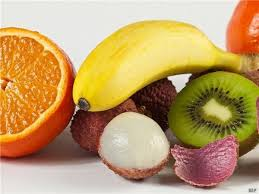

民眾也減少出門頻率，但整天待在家裡，
快被悶壞，以致心情煩躁。
建議可多吃含維生素C及水溶性纖維等高營養密度水果，如奇異果、柑橘類等，來掃除心靈灰暗。
| 名次 | 姓名 | 平均 |
|---|---|---|
| 1st | 王韻琪 | 100 |
| 2nd | 陳oooo | 100 |
| 3rd | 黃oooo | 100 |
| 4th | 沈oo | 100 |
|  | |
| 新冠肺炎疫情全球嚴峻，多國採取鎖國封城等防疫措施， 民眾也減少出門頻率，但整天待在家裡， | 除了看電視、打手遊，就是睡覺， 快被悶壞，以致心情煩躁。 |
家醫科醫師呼籲，民眾在新冠肺炎疫情期間，除了做好個人防護措施外， 建議可多吃含維生素C及水溶性纖維等高營養密度水果，如奇異果、柑橘類等，來掃除心靈灰暗。 |